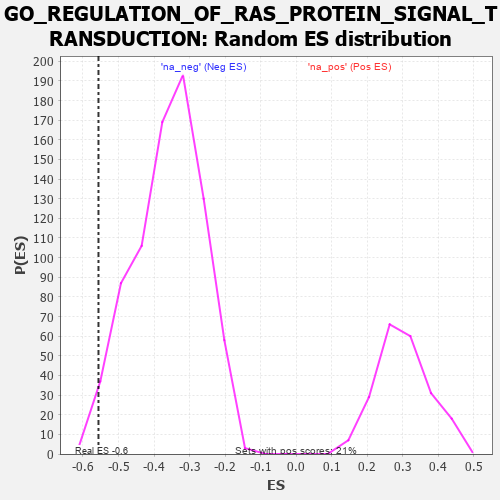

| | | Dataset | 7d |
| Phenotype | NoPhenotypeAvailable |
| Upregulated in class | na_neg |
| GeneSet | GO_REGULATION_OF_RAS_PROTEIN_SIGNAL_TRANSDUCTION |
| Enrichment Score (ES) | -0.55644816 |
| Normalized Enrichment Score (NES) | -1.5415927 |
| Nominal p-value | 0.021573603 |
| FDR q-value | 0.14589615 |
| FWER p-Value | 1.0 |
Table: GSEA Results Summary
 Fig 1: Enrichment plot: GO_REGULATION_OF_RAS_PROTEIN_SIGNAL_TRANSDUCTION
Fig 1: Enrichment plot: GO_REGULATION_OF_RAS_PROTEIN_SIGNAL_TRANSDUCTION
Profile of the Running ES Score & Positions of GeneSet Members on the Rank Ordered List
| PROBE | GENE SYMBOL | GENE_TITLE | RANK IN GENE LIST | RANK METRIC SCORE | RUNNING ES | CORE ENRICHMENT | | 1 | TIMP2 | | | 1478 | 0.394 | -0.1646 | No |
| 2 | NUP62 | | | 1871 | 0.324 | -0.1963 | No |
| 3 | CUL3 | | | 1893 | 0.321 | -0.1814 | No |
| 4 | RAF1 | | | 2011 | 0.303 | -0.1795 | No |
| 5 | MET | | | 2430 | 0.240 | -0.2191 | No |
| 6 | GPR18 | | | 3578 | 0.063 | -0.3601 | No |
| 7 | CBL | | | 3621 | 0.056 | -0.3623 | No |
| 8 | NF1 | | | 3713 | 0.040 | -0.3716 | No |
| 9 | SCAI | | | 3983 | -0.005 | -0.4052 | No |
| 10 | CSF1 | | | 4074 | -0.019 | -0.4155 | No |
| 11 | ABL1 | | | 4125 | -0.027 | -0.4204 | No |
| 12 | PLCE1 | | | 4127 | -0.028 | -0.4190 | No |
| 13 | CRK | | | 4139 | -0.031 | -0.4186 | No |
| 14 | GBF1 | | | 4215 | -0.044 | -0.4257 | No |
| 15 | EPS8 | | | 4474 | -0.088 | -0.4533 | No |
| 16 | ARF6 | | | 4704 | -0.140 | -0.4746 | No |
| 17 | FLCN | | | 5140 | -0.235 | -0.5165 | No |
| 18 | GPR4 | | | 5219 | -0.250 | -0.5126 | No |
| 19 | STK19 | | | 5297 | -0.270 | -0.5076 | No |
| 20 | MADD | | | 5686 | -0.371 | -0.5362 | Yes |
| 21 | DGKI | | | 5725 | -0.384 | -0.5199 | Yes |
| 22 | SGSM3 | | | 5957 | -0.457 | -0.5240 | Yes |
| 23 | RAC1 | | | 6036 | -0.484 | -0.5073 | Yes |
| 24 | FLOT1 | | | 6276 | -0.564 | -0.5066 | Yes |
| 25 | KANK1 | | | 6536 | -0.678 | -0.5021 | Yes |
| 26 | ROBO1 | | | 6577 | -0.699 | -0.4689 | Yes |
| 27 | RABL3 | | | 6627 | -0.727 | -0.4353 | Yes |
| 28 | NET1 | | | 6803 | -0.816 | -0.4127 | Yes |
| 29 | MFN2 | | | 7208 | -1.081 | -0.4045 | Yes |
| 30 | ABCA1 | | | 7243 | -1.113 | -0.3479 | Yes |
| 31 | LRRD1 | | | 7406 | -1.273 | -0.2986 | Yes |
| 32 | SHOC2 | | | 7546 | -1.463 | -0.2361 | Yes |
| 33 | P2RY8 | | | 7750 | -1.912 | -0.1571 | Yes |
| 34 | ARRB1 | | | 7935 | -3.377 | 0.0045 | Yes |
Table: GSEA details [plain text format]

Fig 2: GO_REGULATION_OF_RAS_PROTEIN_SIGNAL_TRANSDUCTION: Random ES distribution
Gene set null distribution of ES for GO_REGULATION_OF_RAS_PROTEIN_SIGNAL_TRANSDUCTION